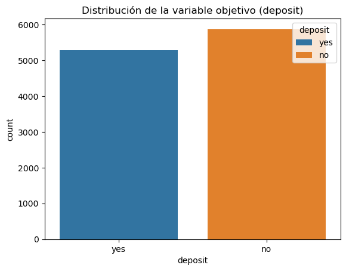
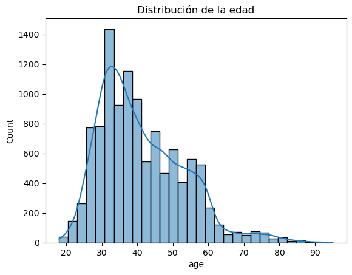
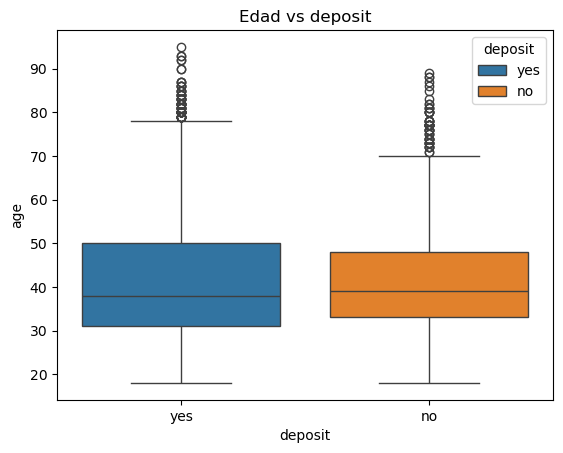
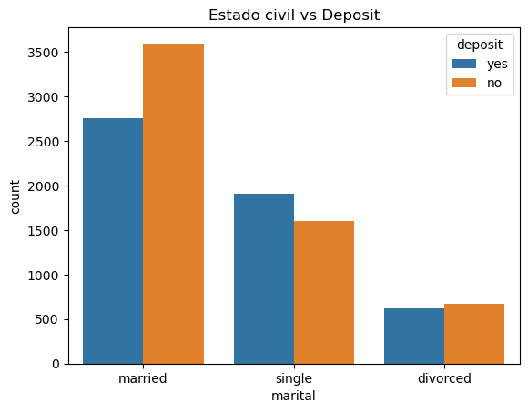
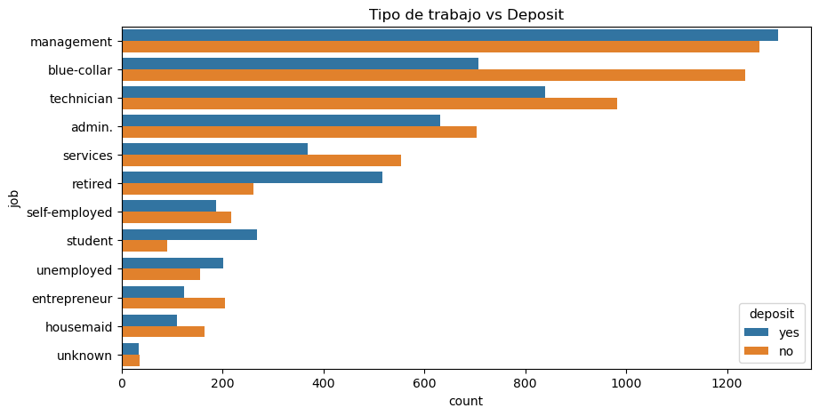
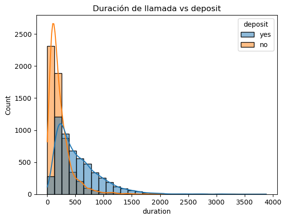
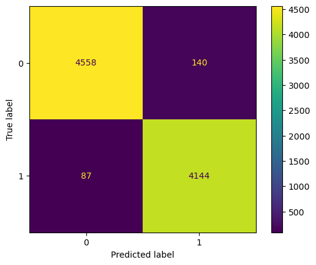
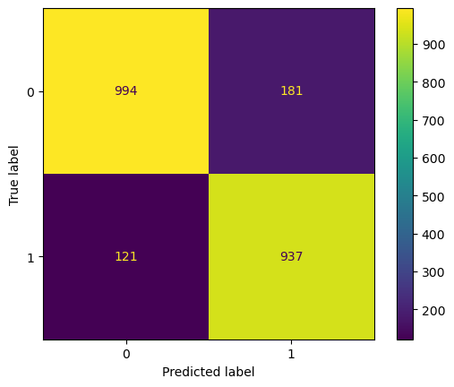
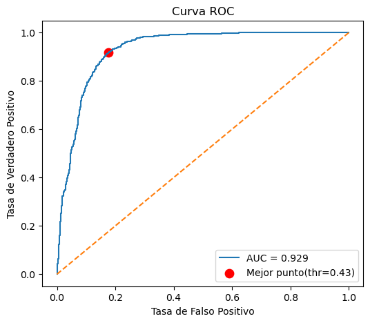
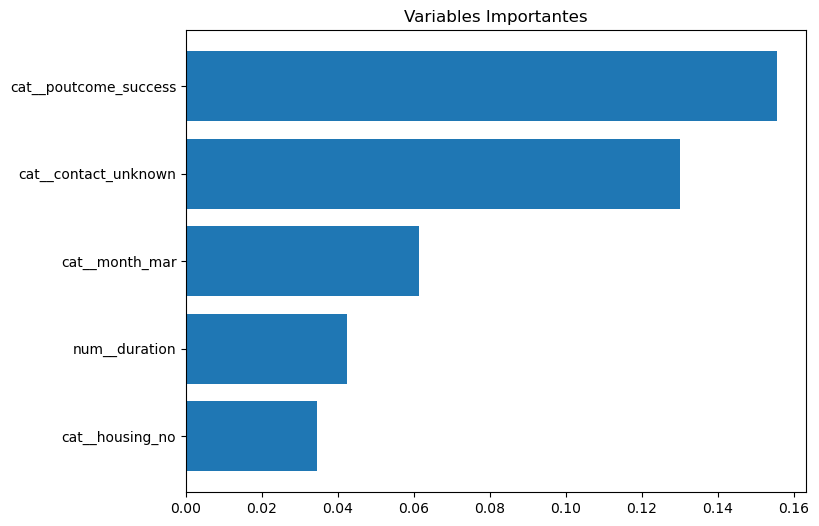

Analisis del dataset de bank
El dataset bank proviene de una campaña de marketing de un banco portugués. Contiene información sobre clientes y llamadas telefónicas realizadas para promocionar depósitos a plazo fijo. El objetivo es predecir si un cliente aceptará abrir un depósito
Cargar las librerias y el dataset
import matplotlib.pyplot as plt
import seaborn as sns
import pandas as pd
import pandas as pd
from sklearn.model_selection import train_test_split, GridSearchCV, StratifiedKFold
from sklearn.compose import ColumnTransformer
from sklearn.preprocessing import StandardScaler, OneHotEncoder
from sklearn.metrics import (
classification_report, ConfusionMatrixDisplay,
roc_curve, auc, f1_score, accuracy_score,
average_precision_score)
from sklearn.ensemble import (
RandomForestClassifier,
GradientBoostingClassifier,
HistGradientBoostingClassifier)
from xgboost import XGBClassifier
from lightgbm import LGBMClassifier
from imblearn.pipeline import Pipeline
import warnings
warnings.filterwarnings("ignore", message="X does not have valid feature names")1 Cargar Dataset
df = pd.read_csv("bank.csv")
df.head(3)| age | job | marital | education | default | balance | housing | loan | contact | day | month | duration | campaign | pdays | previous | poutcome | deposit | |
|---|---|---|---|---|---|---|---|---|---|---|---|---|---|---|---|---|---|
| 0 | 59 | admin. | married | secondary | no | 2343 | yes | no | unknown | 5 | may | 1042 | 1 | -1 | 0 | unknown | yes |
| 1 | 56 | admin. | married | secondary | no | 45 | no | no | unknown | 5 | may | 1467 | 1 | -1 | 0 | unknown | yes |
| 2 | 41 | technician | married | secondary | no | 1270 | yes | no | unknown | 5 | may | 1389 | 1 | -1 | 0 | unknown | yes |
age: edad.
job: tipo de trabajo (admin, blue-collar, technician, etc.).
marital: estado civil (married, single, divorced).
education: nivel educativo.
default: si tiene créditos en default.
housing: si tiene préstamo hipotecario.
loan: si tiene préstamo personal.
month: mes de la última llamada.
day_of_week: día de la semana de la última llamada.
duration: duración de la llamada (segundos).
campaign: número de contactos realizados durante la campaña.
pdays: días desde el último contacto en una campaña anterior.
previous: número de contactos anteriores.
poutcome: resultado de la campaña anterior.
2 Análisis Exploratorio de Datos
df.info()<class 'pandas.core.frame.DataFrame'>
RangeIndex: 11162 entries, 0 to 11161
Data columns (total 17 columns):
# Column Non-Null Count Dtype
--- ------ -------------- -----
0 age 11162 non-null int64
1 job 11162 non-null object
2 marital 11162 non-null object
3 education 11162 non-null object
4 default 11162 non-null object
5 balance 11162 non-null int64
6 housing 11162 non-null object
7 loan 11162 non-null object
8 contact 11162 non-null object
9 day 11162 non-null int64
10 month 11162 non-null object
11 duration 11162 non-null int64
12 campaign 11162 non-null int64
13 pdays 11162 non-null int64
14 previous 11162 non-null int64
15 poutcome 11162 non-null object
16 deposit 11162 non-null object
dtypes: int64(7), object(10)
memory usage: 1.4+ MBHay 10 variables categoricas, incluyendo a la variable objetivo, y 7 variables numerica
df.isna().sum()age 0
job 0
marital 0
education 0
default 0
balance 0
housing 0
loan 0
contact 0
day 0
month 0
duration 0
campaign 0
pdays 0
previous 0
poutcome 0
deposit 0
dtype: int64No existen valores faltantes
df['deposit'].value_counts()deposit
no 5873
yes 5289
Name: count, dtype: int64La variable objetivo tiene un balance entre los 2 valores
categoricas = df.select_dtypes(include=["object"])
categoricas.nunique()job 12
marital 3
education 4
default 2
housing 2
loan 2
contact 3
month 12
poutcome 4
deposit 2
dtype: int64Se observa que la variable job tiene 12 distintos valores
numericas = df.select_dtypes(include=["number"])
numericas.describe().round(2)| age | balance | day | duration | campaign | pdays | previous | |
|---|---|---|---|---|---|---|---|
| count | 11162.00 | 11162.00 | 11162.00 | 11162.00 | 11162.00 | 11162.00 | 11162.00 |
| mean | 41.23 | 1528.54 | 15.66 | 371.99 | 2.51 | 51.33 | 0.83 |
| std | 11.91 | 3225.41 | 8.42 | 347.13 | 2.72 | 108.76 | 2.29 |
| min | 18.00 | -6847.00 | 1.00 | 2.00 | 1.00 | -1.00 | 0.00 |
| 25% | 32.00 | 122.00 | 8.00 | 138.00 | 1.00 | -1.00 | 0.00 |
| 50% | 39.00 | 550.00 | 15.00 | 255.00 | 2.00 | -1.00 | 0.00 |
| 75% | 49.00 | 1708.00 | 22.00 | 496.00 | 3.00 | 20.75 | 1.00 |
| max | 95.00 | 81204.00 | 31.00 | 3881.00 | 63.00 | 854.00 | 58.00 |
Resumen estadístico de las variables numericas, la variable balance, tiene mayor dispersión de los datos con respecto a su media
sns.countplot(x='deposit', data=df, hue=df["deposit"], legend=True)
plt.title('Distribución de la variable objetivo (deposit)');
La proporción de la variable deposit es similar
sns.histplot(df['age'], bins=30, kde=True)
plt.title('Distribución de la edad');
La mayoria de individuos tiene entre 30 a 40 años
sns.boxplot(x='deposit', y='age', data=df, hue="deposit", legend=True)
plt.title('Edad vs deposit');
El gráfico muestra las diferencias de edad entre quienes aceptan y quienes no.
sns.countplot(x='marital', hue='deposit', data=df)
plt.title('Estado civil vs Deposit');
El gráfico permite ver si el estado civil influye en la decisiones
plt.figure(figsize=(10,5))
sns.countplot(y='job', hue='deposit', data=df, order=df['job'].value_counts().index)
plt.title('Tipo de trabajo vs Deposit');
El gráfico muestra qué profesiones tienen mayor tasa de aceptación.
sns.histplot(data=df, x='duration', hue='deposit', bins=30, kde=True)
plt.title('Duración de llamada vs deposit');
df.groupby("deposit")["duration"].describe().round(2)| count | mean | std | min | 25% | 50% | 75% | max | |
|---|---|---|---|---|---|---|---|---|
| deposit | ||||||||
| no | 5873.0 | 223.13 | 208.58 | 2.0 | 94.0 | 163.0 | 282.0 | 3284.0 |
| yes | 5289.0 | 537.29 | 392.53 | 8.0 | 244.0 | 426.0 | 725.0 | 3881.0 |
La duración de las llamadas parece ser muy influyente: llamadas más largas tienden a correlacionarse con aceptación.
3 Preprocesamiento
se realizan un escalado en las variables numericas y convierte los datos categóricos en un formato numérico.
X = df.drop("deposit", axis=1)
y = df["deposit"].map({"no": 0, "yes": 1})
categoricas = categoricas.columns.tolist()[:-1]
numericas = numericas.columns.tolist()
preproc = ColumnTransformer([
("num", StandardScaler(), numericas),
("cat", OneHotEncoder(handle_unknown="ignore", sparse_output=False), categoricas)
])4 Split Dataset
Se divide el dataset en 80% entrenamiento y 20% test
X_train, X_test, y_train, y_test = train_test_split(
X, y, test_size=0.20, stratify=y, random_state=42)5 Definir los modelos
modelos = {
"rf": RandomForestClassifier(random_state=42),
"gb": GradientBoostingClassifier(random_state=42),
"hgb": HistGradientBoostingClassifier(random_state=42),
"xgb": XGBClassifier(
objective="binary:logistic",
eval_metric="logloss",
random_state=42,
),
"lgbm": LGBMClassifier(random_state=42, verbosity=-1, enable_categorical=True)}6 Entrenar todos los modelos
resultados_default = {}
for name, modelo in modelos.items():
pipe = Pipeline([
("preproc", preproc),
("clf", modelo)
])
pipe.fit(X_train, y_train)
y_pred = pipe.predict(X_test)
y_prob = pipe.predict_proba(X_test)[:, 1]
f1 = f1_score(y_test, y_pred)
acc = accuracy_score(y_test, y_pred)
auprc = average_precision_score(y_test, y_pred)
auc_score = auc(*roc_curve(y_test, y_prob)[:2])
resultados_default[name] = {
"pipeline": pipe,
"f1": f1,
"accuracy": acc,
"auc": auc_score,
"AUPRC": auprc
}pd.DataFrame(resultados_default)[1:].transpose().sort_values("f1", ascending=False)| f1 | accuracy | auc | AUPRC | |
|---|---|---|---|---|
| hgb | 0.865604 | 0.867891 | 0.929861 | 0.798607 |
| lgbm | 0.862116 | 0.865204 | 0.929475 | 0.796341 |
| xgb | 0.861213 | 0.864756 | 0.927248 | 0.79644 |
| rf | 0.859617 | 0.862069 | 0.919273 | 0.791377 |
| gb | 0.844403 | 0.849978 | 0.922934 | 0.779954 |
7 Elegir los top 3 por F1 score
ranking = sorted(resultados_default.items(), key=lambda x: x[1]["f1"], reverse=True)
top3 = [name for name, _ in ranking[:3]]
print("======= TOP 3 MODELOS =======")
print(top3)======= TOP 3 MODELOS =======
['hgb', 'lgbm', 'xgb']8 Gridsearch solo a los Top 3
param_grid = {
"rf": {
"clf__n_estimators": [200, 400, 600],
"clf__max_depth": [5, 10, 15]
},
"gb": {
"clf__learning_rate": [0.01, 0.05, 0.1],
"clf__n_estimators": [100, 200, 400]
},
"hgb": {
"clf__learning_rate": [0.01, 0.05, 0.1],
"clf__max_depth": [5, 10, 15]
},
"xgb": {
"clf__eta": [0.01,0.05, 0.1],
"clf__max_depth": [4, 8],
"clf__n_estimators": [200, 400, 600]
},
"lgbm": {
"clf__learning_rate": [0.01, 0.05, 0.1],
"clf__n_estimators": [200, 400, 600],
"clf__max_depth": [-1, 10]
}
}Entrenando los modelos con Gridsearch
best_models = {}
cv_strategy = StratifiedKFold(n_splits=5, shuffle=True, random_state=42)
for name in top3:
print(f"---- GRIDSEARCH: {name} ----")
pipe = Pipeline([
("preproc", preproc),
("clf", modelos[name])
])
grid = GridSearchCV(
pipe,
param_grid[name],
cv=cv_strategy,
scoring="f1",
n_jobs=-1
)
grid.fit(X_train, y_train)
best_models[name] = grid.best_estimator_---- GRIDSEARCH: hgb ----
---- GRIDSEARCH: lgbm ----
/home/cris/miniconda3/envs/mi_tf/lib/python3.9/site-packages/sklearn/utils/validation.py:2739: UserWarning: X does not have valid feature names, but LGBMClassifier was fitted with feature names
warnings.warn(
/home/cris/miniconda3/envs/mi_tf/lib/python3.9/site-packages/sklearn/utils/validation.py:2739: UserWarning: X does not have valid feature names, but LGBMClassifier was fitted with feature names
warnings.warn(
/home/cris/miniconda3/envs/mi_tf/lib/python3.9/site-packages/sklearn/utils/validation.py:2739: UserWarning: X does not have valid feature names, but LGBMClassifier was fitted with feature names
warnings.warn(
/home/cris/miniconda3/envs/mi_tf/lib/python3.9/site-packages/sklearn/utils/validation.py:2739: UserWarning: X does not have valid feature names, but LGBMClassifier was fitted with feature names
warnings.warn(
/home/cris/miniconda3/envs/mi_tf/lib/python3.9/site-packages/sklearn/utils/validation.py:2739: UserWarning: X does not have valid feature names, but LGBMClassifier was fitted with feature names
warnings.warn(
/home/cris/miniconda3/envs/mi_tf/lib/python3.9/site-packages/sklearn/utils/validation.py:2739: UserWarning: X does not have valid feature names, but LGBMClassifier was fitted with feature names
warnings.warn(
/home/cris/miniconda3/envs/mi_tf/lib/python3.9/site-packages/sklearn/utils/validation.py:2739: UserWarning: X does not have valid feature names, but LGBMClassifier was fitted with feature names
warnings.warn(
/home/cris/miniconda3/envs/mi_tf/lib/python3.9/site-packages/sklearn/utils/validation.py:2739: UserWarning: X does not have valid feature names, but LGBMClassifier was fitted with feature names
warnings.warn(
/home/cris/miniconda3/envs/mi_tf/lib/python3.9/site-packages/sklearn/utils/validation.py:2739: UserWarning: X does not have valid feature names, but LGBMClassifier was fitted with feature names
warnings.warn(
/home/cris/miniconda3/envs/mi_tf/lib/python3.9/site-packages/sklearn/utils/validation.py:2739: UserWarning: X does not have valid feature names, but LGBMClassifier was fitted with feature names
warnings.warn(
/home/cris/miniconda3/envs/mi_tf/lib/python3.9/site-packages/sklearn/utils/validation.py:2739: UserWarning: X does not have valid feature names, but LGBMClassifier was fitted with feature names
warnings.warn(
/home/cris/miniconda3/envs/mi_tf/lib/python3.9/site-packages/sklearn/utils/validation.py:2739: UserWarning: X does not have valid feature names, but LGBMClassifier was fitted with feature names
warnings.warn(
/home/cris/miniconda3/envs/mi_tf/lib/python3.9/site-packages/sklearn/utils/validation.py:2739: UserWarning: X does not have valid feature names, but LGBMClassifier was fitted with feature names
warnings.warn(
/home/cris/miniconda3/envs/mi_tf/lib/python3.9/site-packages/sklearn/utils/validation.py:2739: UserWarning: X does not have valid feature names, but LGBMClassifier was fitted with feature names
warnings.warn(
/home/cris/miniconda3/envs/mi_tf/lib/python3.9/site-packages/sklearn/utils/validation.py:2739: UserWarning: X does not have valid feature names, but LGBMClassifier was fitted with feature names
warnings.warn(
/home/cris/miniconda3/envs/mi_tf/lib/python3.9/site-packages/sklearn/utils/validation.py:2739: UserWarning: X does not have valid feature names, but LGBMClassifier was fitted with feature names
warnings.warn(
/home/cris/miniconda3/envs/mi_tf/lib/python3.9/site-packages/sklearn/utils/validation.py:2739: UserWarning: X does not have valid feature names, but LGBMClassifier was fitted with feature names
warnings.warn(
/home/cris/miniconda3/envs/mi_tf/lib/python3.9/site-packages/sklearn/utils/validation.py:2739: UserWarning: X does not have valid feature names, but LGBMClassifier was fitted with feature names
warnings.warn(
/home/cris/miniconda3/envs/mi_tf/lib/python3.9/site-packages/sklearn/utils/validation.py:2739: UserWarning: X does not have valid feature names, but LGBMClassifier was fitted with feature names
warnings.warn(
/home/cris/miniconda3/envs/mi_tf/lib/python3.9/site-packages/sklearn/utils/validation.py:2739: UserWarning: X does not have valid feature names, but LGBMClassifier was fitted with feature names
warnings.warn(
/home/cris/miniconda3/envs/mi_tf/lib/python3.9/site-packages/sklearn/utils/validation.py:2739: UserWarning: X does not have valid feature names, but LGBMClassifier was fitted with feature names
warnings.warn(
/home/cris/miniconda3/envs/mi_tf/lib/python3.9/site-packages/sklearn/utils/validation.py:2739: UserWarning: X does not have valid feature names, but LGBMClassifier was fitted with feature names
warnings.warn(
/home/cris/miniconda3/envs/mi_tf/lib/python3.9/site-packages/sklearn/utils/validation.py:2739: UserWarning: X does not have valid feature names, but LGBMClassifier was fitted with feature names
warnings.warn(
/home/cris/miniconda3/envs/mi_tf/lib/python3.9/site-packages/sklearn/utils/validation.py:2739: UserWarning: X does not have valid feature names, but LGBMClassifier was fitted with feature names
warnings.warn(
/home/cris/miniconda3/envs/mi_tf/lib/python3.9/site-packages/sklearn/utils/validation.py:2739: UserWarning: X does not have valid feature names, but LGBMClassifier was fitted with feature names
warnings.warn(
/home/cris/miniconda3/envs/mi_tf/lib/python3.9/site-packages/sklearn/utils/validation.py:2739: UserWarning: X does not have valid feature names, but LGBMClassifier was fitted with feature names
warnings.warn(
/home/cris/miniconda3/envs/mi_tf/lib/python3.9/site-packages/sklearn/utils/validation.py:2739: UserWarning: X does not have valid feature names, but LGBMClassifier was fitted with feature names
warnings.warn(
/home/cris/miniconda3/envs/mi_tf/lib/python3.9/site-packages/sklearn/utils/validation.py:2739: UserWarning: X does not have valid feature names, but LGBMClassifier was fitted with feature names
warnings.warn(
/home/cris/miniconda3/envs/mi_tf/lib/python3.9/site-packages/sklearn/utils/validation.py:2739: UserWarning: X does not have valid feature names, but LGBMClassifier was fitted with feature names
warnings.warn(
/home/cris/miniconda3/envs/mi_tf/lib/python3.9/site-packages/sklearn/utils/validation.py:2739: UserWarning: X does not have valid feature names, but LGBMClassifier was fitted with feature names
warnings.warn(
/home/cris/miniconda3/envs/mi_tf/lib/python3.9/site-packages/sklearn/utils/validation.py:2739: UserWarning: X does not have valid feature names, but LGBMClassifier was fitted with feature names
warnings.warn(
/home/cris/miniconda3/envs/mi_tf/lib/python3.9/site-packages/sklearn/utils/validation.py:2739: UserWarning: X does not have valid feature names, but LGBMClassifier was fitted with feature names
warnings.warn(
/home/cris/miniconda3/envs/mi_tf/lib/python3.9/site-packages/sklearn/utils/validation.py:2739: UserWarning: X does not have valid feature names, but LGBMClassifier was fitted with feature names
warnings.warn(
/home/cris/miniconda3/envs/mi_tf/lib/python3.9/site-packages/sklearn/utils/validation.py:2739: UserWarning: X does not have valid feature names, but LGBMClassifier was fitted with feature names
warnings.warn(
/home/cris/miniconda3/envs/mi_tf/lib/python3.9/site-packages/sklearn/utils/validation.py:2739: UserWarning: X does not have valid feature names, but LGBMClassifier was fitted with feature names
warnings.warn(
/home/cris/miniconda3/envs/mi_tf/lib/python3.9/site-packages/sklearn/utils/validation.py:2739: UserWarning: X does not have valid feature names, but LGBMClassifier was fitted with feature names
warnings.warn(
/home/cris/miniconda3/envs/mi_tf/lib/python3.9/site-packages/sklearn/utils/validation.py:2739: UserWarning: X does not have valid feature names, but LGBMClassifier was fitted with feature names
warnings.warn(
/home/cris/miniconda3/envs/mi_tf/lib/python3.9/site-packages/sklearn/utils/validation.py:2739: UserWarning: X does not have valid feature names, but LGBMClassifier was fitted with feature names
warnings.warn(
/home/cris/miniconda3/envs/mi_tf/lib/python3.9/site-packages/sklearn/utils/validation.py:2739: UserWarning: X does not have valid feature names, but LGBMClassifier was fitted with feature names
warnings.warn(
/home/cris/miniconda3/envs/mi_tf/lib/python3.9/site-packages/sklearn/utils/validation.py:2739: UserWarning: X does not have valid feature names, but LGBMClassifier was fitted with feature names
warnings.warn(
/home/cris/miniconda3/envs/mi_tf/lib/python3.9/site-packages/sklearn/utils/validation.py:2739: UserWarning: X does not have valid feature names, but LGBMClassifier was fitted with feature names
warnings.warn(
/home/cris/miniconda3/envs/mi_tf/lib/python3.9/site-packages/sklearn/utils/validation.py:2739: UserWarning: X does not have valid feature names, but LGBMClassifier was fitted with feature names
warnings.warn(
/home/cris/miniconda3/envs/mi_tf/lib/python3.9/site-packages/sklearn/utils/validation.py:2739: UserWarning: X does not have valid feature names, but LGBMClassifier was fitted with feature names
warnings.warn(
/home/cris/miniconda3/envs/mi_tf/lib/python3.9/site-packages/sklearn/utils/validation.py:2739: UserWarning: X does not have valid feature names, but LGBMClassifier was fitted with feature names
warnings.warn(
/home/cris/miniconda3/envs/mi_tf/lib/python3.9/site-packages/sklearn/utils/validation.py:2739: UserWarning: X does not have valid feature names, but LGBMClassifier was fitted with feature names
warnings.warn(
/home/cris/miniconda3/envs/mi_tf/lib/python3.9/site-packages/sklearn/utils/validation.py:2739: UserWarning: X does not have valid feature names, but LGBMClassifier was fitted with feature names
warnings.warn(
/home/cris/miniconda3/envs/mi_tf/lib/python3.9/site-packages/sklearn/utils/validation.py:2739: UserWarning: X does not have valid feature names, but LGBMClassifier was fitted with feature names
warnings.warn(
/home/cris/miniconda3/envs/mi_tf/lib/python3.9/site-packages/sklearn/utils/validation.py:2739: UserWarning: X does not have valid feature names, but LGBMClassifier was fitted with feature names
warnings.warn(
/home/cris/miniconda3/envs/mi_tf/lib/python3.9/site-packages/sklearn/utils/validation.py:2739: UserWarning: X does not have valid feature names, but LGBMClassifier was fitted with feature names
warnings.warn(
/home/cris/miniconda3/envs/mi_tf/lib/python3.9/site-packages/sklearn/utils/validation.py:2739: UserWarning: X does not have valid feature names, but LGBMClassifier was fitted with feature names
warnings.warn(
/home/cris/miniconda3/envs/mi_tf/lib/python3.9/site-packages/sklearn/utils/validation.py:2739: UserWarning: X does not have valid feature names, but LGBMClassifier was fitted with feature names
warnings.warn(
/home/cris/miniconda3/envs/mi_tf/lib/python3.9/site-packages/sklearn/utils/validation.py:2739: UserWarning: X does not have valid feature names, but LGBMClassifier was fitted with feature names
warnings.warn(
/home/cris/miniconda3/envs/mi_tf/lib/python3.9/site-packages/sklearn/utils/validation.py:2739: UserWarning: X does not have valid feature names, but LGBMClassifier was fitted with feature names
warnings.warn(
/home/cris/miniconda3/envs/mi_tf/lib/python3.9/site-packages/sklearn/utils/validation.py:2739: UserWarning: X does not have valid feature names, but LGBMClassifier was fitted with feature names
warnings.warn(
/home/cris/miniconda3/envs/mi_tf/lib/python3.9/site-packages/sklearn/utils/validation.py:2739: UserWarning: X does not have valid feature names, but LGBMClassifier was fitted with feature names
warnings.warn(
/home/cris/miniconda3/envs/mi_tf/lib/python3.9/site-packages/sklearn/utils/validation.py:2739: UserWarning: X does not have valid feature names, but LGBMClassifier was fitted with feature names
warnings.warn(
/home/cris/miniconda3/envs/mi_tf/lib/python3.9/site-packages/sklearn/utils/validation.py:2739: UserWarning: X does not have valid feature names, but LGBMClassifier was fitted with feature names
warnings.warn(
/home/cris/miniconda3/envs/mi_tf/lib/python3.9/site-packages/sklearn/utils/validation.py:2739: UserWarning: X does not have valid feature names, but LGBMClassifier was fitted with feature names
warnings.warn(
/home/cris/miniconda3/envs/mi_tf/lib/python3.9/site-packages/sklearn/utils/validation.py:2739: UserWarning: X does not have valid feature names, but LGBMClassifier was fitted with feature names
warnings.warn(
/home/cris/miniconda3/envs/mi_tf/lib/python3.9/site-packages/sklearn/utils/validation.py:2739: UserWarning: X does not have valid feature names, but LGBMClassifier was fitted with feature names
warnings.warn(
/home/cris/miniconda3/envs/mi_tf/lib/python3.9/site-packages/sklearn/utils/validation.py:2739: UserWarning: X does not have valid feature names, but LGBMClassifier was fitted with feature names
warnings.warn(
/home/cris/miniconda3/envs/mi_tf/lib/python3.9/site-packages/sklearn/utils/validation.py:2739: UserWarning: X does not have valid feature names, but LGBMClassifier was fitted with feature names
warnings.warn(
/home/cris/miniconda3/envs/mi_tf/lib/python3.9/site-packages/sklearn/utils/validation.py:2739: UserWarning: X does not have valid feature names, but LGBMClassifier was fitted with feature names
warnings.warn(
/home/cris/miniconda3/envs/mi_tf/lib/python3.9/site-packages/sklearn/utils/validation.py:2739: UserWarning: X does not have valid feature names, but LGBMClassifier was fitted with feature names
warnings.warn(
/home/cris/miniconda3/envs/mi_tf/lib/python3.9/site-packages/sklearn/utils/validation.py:2739: UserWarning: X does not have valid feature names, but LGBMClassifier was fitted with feature names
warnings.warn(
/home/cris/miniconda3/envs/mi_tf/lib/python3.9/site-packages/sklearn/utils/validation.py:2739: UserWarning: X does not have valid feature names, but LGBMClassifier was fitted with feature names
warnings.warn(
/home/cris/miniconda3/envs/mi_tf/lib/python3.9/site-packages/sklearn/utils/validation.py:2739: UserWarning: X does not have valid feature names, but LGBMClassifier was fitted with feature names
warnings.warn(
/home/cris/miniconda3/envs/mi_tf/lib/python3.9/site-packages/sklearn/utils/validation.py:2739: UserWarning: X does not have valid feature names, but LGBMClassifier was fitted with feature names
warnings.warn(
/home/cris/miniconda3/envs/mi_tf/lib/python3.9/site-packages/sklearn/utils/validation.py:2739: UserWarning: X does not have valid feature names, but LGBMClassifier was fitted with feature names
warnings.warn(
/home/cris/miniconda3/envs/mi_tf/lib/python3.9/site-packages/sklearn/utils/validation.py:2739: UserWarning: X does not have valid feature names, but LGBMClassifier was fitted with feature names
warnings.warn(
/home/cris/miniconda3/envs/mi_tf/lib/python3.9/site-packages/sklearn/utils/validation.py:2739: UserWarning: X does not have valid feature names, but LGBMClassifier was fitted with feature names
warnings.warn(
/home/cris/miniconda3/envs/mi_tf/lib/python3.9/site-packages/sklearn/utils/validation.py:2739: UserWarning: X does not have valid feature names, but LGBMClassifier was fitted with feature names
warnings.warn(
/home/cris/miniconda3/envs/mi_tf/lib/python3.9/site-packages/sklearn/utils/validation.py:2739: UserWarning: X does not have valid feature names, but LGBMClassifier was fitted with feature names
warnings.warn(
/home/cris/miniconda3/envs/mi_tf/lib/python3.9/site-packages/sklearn/utils/validation.py:2739: UserWarning: X does not have valid feature names, but LGBMClassifier was fitted with feature names
warnings.warn(
/home/cris/miniconda3/envs/mi_tf/lib/python3.9/site-packages/sklearn/utils/validation.py:2739: UserWarning: X does not have valid feature names, but LGBMClassifier was fitted with feature names
warnings.warn(
/home/cris/miniconda3/envs/mi_tf/lib/python3.9/site-packages/sklearn/utils/validation.py:2739: UserWarning: X does not have valid feature names, but LGBMClassifier was fitted with feature names
warnings.warn(
/home/cris/miniconda3/envs/mi_tf/lib/python3.9/site-packages/sklearn/utils/validation.py:2739: UserWarning: X does not have valid feature names, but LGBMClassifier was fitted with feature names
warnings.warn(
/home/cris/miniconda3/envs/mi_tf/lib/python3.9/site-packages/sklearn/utils/validation.py:2739: UserWarning: X does not have valid feature names, but LGBMClassifier was fitted with feature names
warnings.warn(
/home/cris/miniconda3/envs/mi_tf/lib/python3.9/site-packages/sklearn/utils/validation.py:2739: UserWarning: X does not have valid feature names, but LGBMClassifier was fitted with feature names
warnings.warn(
/home/cris/miniconda3/envs/mi_tf/lib/python3.9/site-packages/sklearn/utils/validation.py:2739: UserWarning: X does not have valid feature names, but LGBMClassifier was fitted with feature names
warnings.warn(
/home/cris/miniconda3/envs/mi_tf/lib/python3.9/site-packages/sklearn/utils/validation.py:2739: UserWarning: X does not have valid feature names, but LGBMClassifier was fitted with feature names
warnings.warn(
/home/cris/miniconda3/envs/mi_tf/lib/python3.9/site-packages/sklearn/utils/validation.py:2739: UserWarning: X does not have valid feature names, but LGBMClassifier was fitted with feature names
warnings.warn(
/home/cris/miniconda3/envs/mi_tf/lib/python3.9/site-packages/sklearn/utils/validation.py:2739: UserWarning: X does not have valid feature names, but LGBMClassifier was fitted with feature names
warnings.warn(
/home/cris/miniconda3/envs/mi_tf/lib/python3.9/site-packages/sklearn/utils/validation.py:2739: UserWarning: X does not have valid feature names, but LGBMClassifier was fitted with feature names
warnings.warn(
/home/cris/miniconda3/envs/mi_tf/lib/python3.9/site-packages/sklearn/utils/validation.py:2739: UserWarning: X does not have valid feature names, but LGBMClassifier was fitted with feature names
warnings.warn(
/home/cris/miniconda3/envs/mi_tf/lib/python3.9/site-packages/sklearn/utils/validation.py:2739: UserWarning: X does not have valid feature names, but LGBMClassifier was fitted with feature names
warnings.warn(
/home/cris/miniconda3/envs/mi_tf/lib/python3.9/site-packages/sklearn/utils/validation.py:2739: UserWarning: X does not have valid feature names, but LGBMClassifier was fitted with feature names
warnings.warn(
/home/cris/miniconda3/envs/mi_tf/lib/python3.9/site-packages/sklearn/utils/validation.py:2739: UserWarning: X does not have valid feature names, but LGBMClassifier was fitted with feature names
warnings.warn(
/home/cris/miniconda3/envs/mi_tf/lib/python3.9/site-packages/sklearn/utils/validation.py:2739: UserWarning: X does not have valid feature names, but LGBMClassifier was fitted with feature names
warnings.warn(
/home/cris/miniconda3/envs/mi_tf/lib/python3.9/site-packages/sklearn/utils/validation.py:2739: UserWarning: X does not have valid feature names, but LGBMClassifier was fitted with feature names
warnings.warn(
---- GRIDSEARCH: xgb ----9 Seleccionar el mejor modelo
scores = {}
for name, model in best_models.items():
scores[name] = model.score(X_test, y_test)
best_name = max(scores, key=scores.get)
best_model = best_models[best_name]
print("=== MEJOR MODELO ===")
print(best_name, scores[best_name])=== MEJOR MODELO ===
xgb 0.864755933721451Métricas sobre dataset en train, en el cual el f1-score es 0.97
y_pred = best_model.predict(X_train)
print("=== Reporte en Train===")
print(classification_report(y_train, y_pred))=== Reporte en Train===
precision recall f1-score support
0 0.98 0.97 0.98 4698
1 0.97 0.98 0.97 4231
accuracy 0.97 8929
macro avg 0.97 0.97 0.97 8929
weighted avg 0.97 0.97 0.97 8929La matrix de confusión
ConfusionMatrixDisplay.from_predictions(y_train, y_pred);
10 Evaluación Final
El f1-score en el test es del 0.86
y_pred = best_model.predict(X_test)
print("=== Reporte en Test ===")
print(classification_report(y_test, y_pred))=== Reporte en Test ===
precision recall f1-score support
0 0.89 0.85 0.87 1175
1 0.84 0.89 0.86 1058
accuracy 0.86 2233
macro avg 0.86 0.87 0.86 2233
weighted avg 0.87 0.86 0.86 2233ConfusionMatrixDisplay.from_predictions(y_test, y_pred);
9 Gráfico ROC & Curva PR
El mejor umbral es a 43%
fpr, tpr, thresholds = roc_curve(y_test, y_prob)
roc_auc = auc(fpr, tpr)
plt.figure(figsize=(6,5))
plt.plot(fpr, tpr, label=f"AUC = {roc_auc:.3f}")
plt.plot([0,1], [0,1], linestyle="--")
punto = (tpr - fpr).argmax()
fpr_best = fpr[punto]
tpr_best = tpr[punto]
threshold_best = thresholds[punto]
plt.scatter(fpr_best, tpr_best, color="red", s=80,
label=f"Mejor punto(thr={threshold_best:.2f})")
plt.xlabel("Tasa de Falso Positivo")
plt.ylabel("Tasa de Verdadero Positivo")
plt.title("Curva ROC")
plt.legend();
print("Limite:", threshold_best)
print("FPR:", fpr_best)
print("TPR:", tpr_best)Limite: 0.4329248454634197
FPR: 0.1753191489361702
TPR: 0.9187145557655955
Las variables mas importantes es cuando la campaña anterior fue exitosa.
feat_imp = pd.DataFrame({
"var": preproc.get_feature_names_out(),
"imp": best_model.named_steps["clf"].feature_importances_
}).sort_values(by="imp", ascending=False)[:5]
plt.figure(figsize=(8,6))
plt.barh(feat_imp["var"], feat_imp["imp"])
plt.gca().invert_yaxis()
plt.title("Variables Importantes");